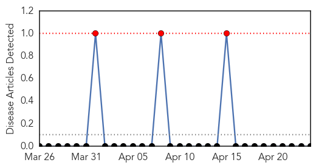

Mumps
30-Day Web Trend
3 alerts, 0 warnings

30-Day Twitter Trend
0 alerts, 0 warnings

Article Locations

Article Confidences

Top Articles:
-
No articles found for Apr 24, 2015
Top Tweets:
-
No tweets found for Apr 24, 2015
Hepatitis
30-Day Web Trend
4 alerts, 0 warnings

30-Day Twitter Trend
0 alerts, 0 warnings

Article Locations

Article Confidences
Top Articles:
- 0.903
- Indiana HIV outbreak triggers national alert
- 0.792
- CDC Alert: HIV And Hepatitis C Co-Infection Outbreaks Could Result From IV Drug Use
- 0.792
- HIV Outbreak In Indiana Raises Alarm Over Injected Painkillers
- 0.781
- Indiana HIV outbreak grows, prompts national alert
- 0.760
- CDC sounds alarm over Indiana HIV outbreak
- 0.754
- HIV Cases increased to 142 in Rural Part of Southeastern Indiana
- 0.671
- Brunei’s achievements highlighted at launching of Immunisation Week
- 0.641
- CDC: Indiana HIV outbreak is 'tip of the iceberg' of a national drug abuse problem
- 0.637
- Indiana HIV outbreak, hepatitis C epidemic sparks CDC alert
- 0.590
- Putnam hires new threat prep coordinator
- 0.564
- Drug-Related HIV Outbreak Spurs Nationwide Alert
- 0.518
- World Immunisation Week: Parents need to be educated about importance of vaccinations, says Dr Raghuram
Top Tweets:
-
No tweets found for Apr 24, 2015